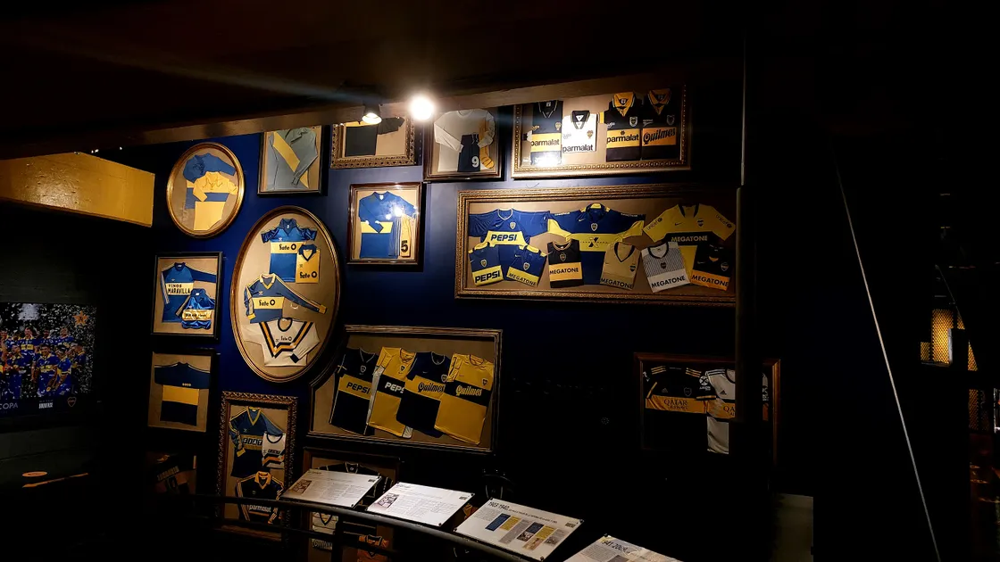
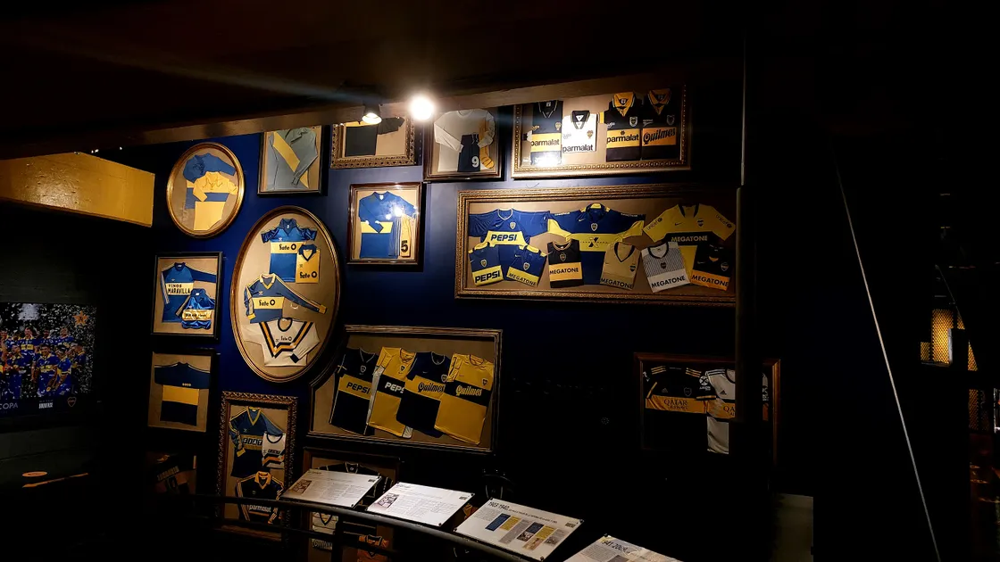
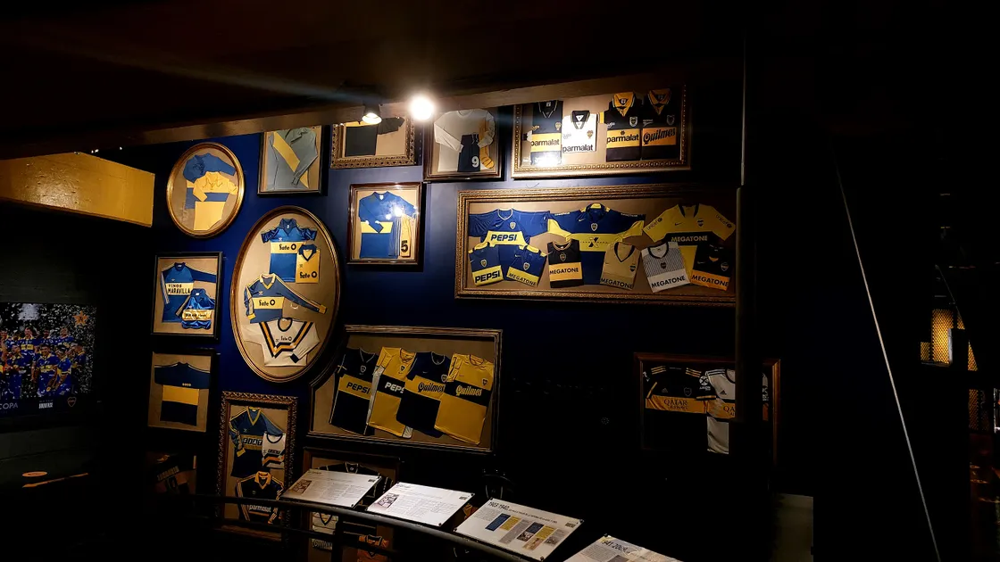
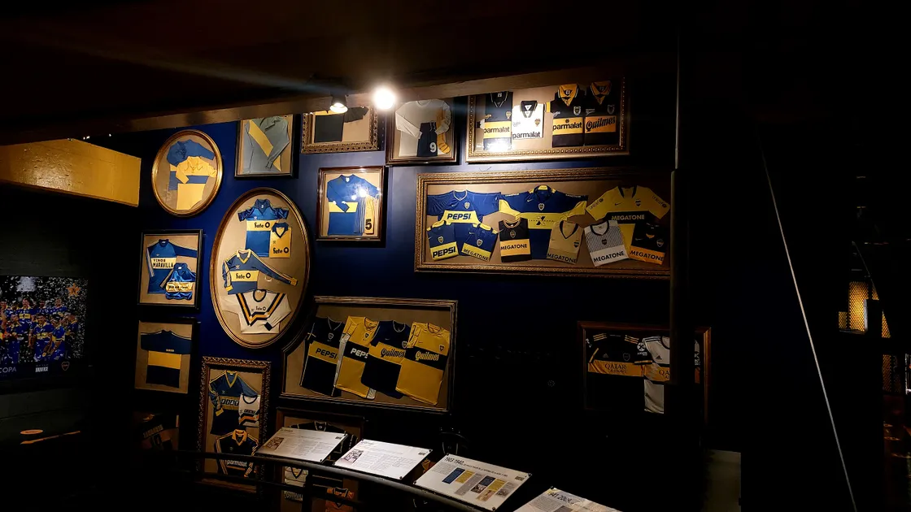

El Estadio Alberto J. Armando, popularmente conocido como La Bombonera, es la casa del Club Atlético Boca Juniors y uno de los estadios más emblemáticos del fútbol mundial.
Ubicado en el barrio de La Boca, Buenos Aires, La Bombonera es famosa por su atmósfera única, donde la pasión de los hinchas se siente en cada rincón. Su estructura asimétrica,
con una de sus tribunas más altas que las demás, le otorga una acústica inigualable y una cercanía impresionante al campo de juego.
Además de ser un templo del fútbol, La Bombonera alberga el Museo de la Pasión Boquense, que permite a los visitantes sumergirse en más de 100 años de historia del club,
reviviendo momentos icónicos y celebrando a sus grandes ídolos.
A continuación, se presenta un listado de los servicios disponibles tanto en el museo como en el estadio: